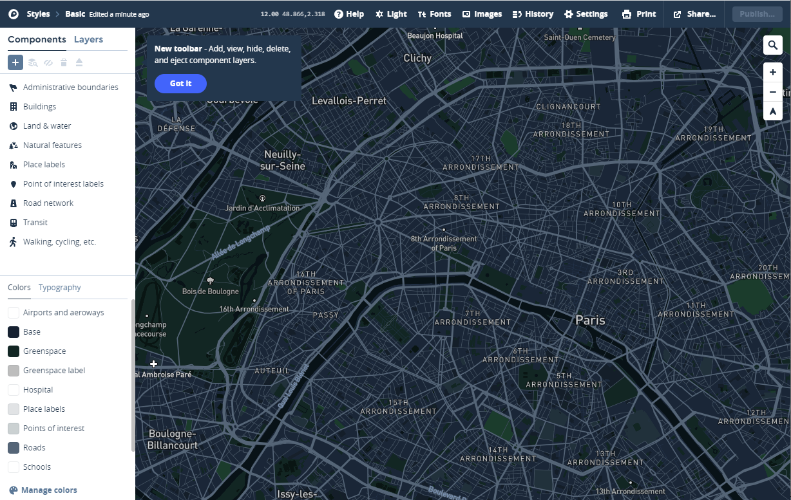
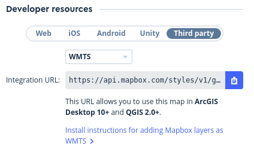

5. Mapas personalizados con MapBox Studio y MapBox GL JS

Web
Productos
APIs
Página referéncia MapBox GL!!
GitHUB
Tutoriales
- https://www.mapbox.com/mapbox-gl-js/example/simple-map/
- https://www.mapbox.com/help/tutorials/
- https://www.mapbox.com/help/studio-manual/
- https://ovrdc.github.io/gis-tutorials/mapbox/
Videos
- https://www.youtube.com/watch?v=jrnoFU5Wkdo
- https://www.youtube.com/watch?v=Zn3Xx-TSrM8
- https://www.youtube.com/watch?v=r6Ij_34xTD0
- https://www.youtube.com/watch?v=YhynsA9_fPc
Descripción
MapxBox es una empresa privada que ofrece una plataforma para la publicacón de mapas. Mapbox destaca por creado de forma abierta MBTiles Vector Tiles MapBox GL
- MapBox Studio es una herramienta para personalizar y publicar estilos de mapa vector
- Maputnik es un editor libre (no de Mapbox) que también sirve para editar estilos de mapas vector
¿Cómo empezar?
Nos damos de alta en MapBox
MapBox Studio
1-Creamos nuestor propio estilo
-
Entramos en MapBox.com seleccionamos nuestro avatar
Studio -
Dentro de Studio tenemos tres opciones básicas
- Styles: Para crear nuestros estilos pròpios
- Tilesets: Para subir nuestros datos y convertirlos en Vector Tiles y/o integrarlos con nuestros estilos
- Dataset: Para subir capas GeoJson que pueden ser convertidas a Tilesets
-
Seleccionamos -->
Styles-->New style

- Seleccionamos un estilo como base y cambiamos colores
Customize

- Cambiamos nombre del estilo "Bicing"

-
Una vez hemos acabado -->
Publish your style-->Publish as new -
Share, develop, and use your style -- Copiamos
Style URLyAccess token

Truco
Si seleccionamos "Third party" tambié podemos exponer el estilo com WMTS (Raster) en Leaflet!!
Nos divertimos con Cartogram!!
2-Visualizar estilo propio con Mapbox Gl JS
MapBox tiene una libreria JavaScript llamada MapBox GL JS para visualizar estilos entre otras muchas otras funcionalidades
Página referéncia MapBox GL!! * https://www.mapbox.com/mapbox-gl-js/api/
Warning
Siempre que utilizemos algún estilo de Mapbox studio o algún servicio de Mapbox deberemos añadir nuestro Access Token
mapboxgl.Map
Es el constructor principal del mapa https://docs.mapbox.com/mapbox-gl-js/api/#map
1 2 3 4 5 6 | var map = new mapboxgl.Map({ container: 'map', // container id style: 'mapbox://styles/mapbox/streets-v11', // stylesheet location center: [-74.5, 40], // starting position [lng, lat] zoom: 9 // starting zoom }); |
Creamos mapbox-basico.html
1 2 3 4 5 6 7 8 9 10 11 12 13 14 15 16 17 18 19 20 21 22 23 24 25 26 27 28 29 30 31 32 33 34 35 36 37 38 39 40 41 42 | <html> <head> <meta charset='utf-8' /> <title>Mapbox estilo</title> <meta name='viewport' content='initial-scale=1,maximum-scale=1,user-scalable=no' /> <script src='https://api.tiles.mapbox.com/mapbox-gl-js/v1.6.1/mapbox-gl.js'></script> <link href='https://api.tiles.mapbox.com/mapbox-gl-js/v1.6.1/mapbox-gl.css' rel='stylesheet' /> <style> body { margin: 0; padding: 0; } #map { position: absolute; top: 0; bottom: 0; width: 100%; height: 100% } </style> <script> //Añadir vuestor token y vuestro estilo function init() { mapboxgl.accessToken = 'pk.eyJ1IjoiZ2lzbWFzdGVybTIiLCJhIjoiY2plZHhubTQxMTNoYzMza3Rqa3kxYTdrOCJ9.53B1E6mKD_EQOVb2Y0-SsA'; var map = new mapboxgl.Map({ container: 'map', style: 'mapbox://styles/gismasterm2/ck4zvjxxs2b8m1cmjumqlru5i', center: [2.16859, 41.3954], zoom: 13, attributionControl: false }); } </script> </head> <body onload="init()"> <div id="map"></div> </body> </html> |
Podemos añadir algunos controles
Controles
https://docs.mapbox.com/mapbox-gl-js/api/#user%20interface
IControl
NavigationControl
GeolocateControl
AttributionControl
ScaleControl
FullscreenControl
Popup
Marker
1 2 3 4 5 6 7 8 9 10 11 12 13 14 15 16 17 18 19 20 21 22 23 24 25 26 27 28 29 30 31 32 33 34 35 36 37 38 39 40 41 42 43 | <html> <head> <meta charset='utf-8' /> <title>Mapbox estilo</title> <meta name='viewport' content='initial-scale=1,maximum-scale=1,user-scalable=no' /> <script src='https://api.tiles.mapbox.com/mapbox-gl-js/v1.6.1/mapbox-gl.js'></script> <link href='https://api.tiles.mapbox.com/mapbox-gl-js/v1.6.1/mapbox-gl.css' rel='stylesheet' /> <style> body { margin: 0; padding: 0; } #map { position: absolute; top: 0; bottom: 0; width: 100%; height: 100% } </style> <script> //Añadir vuestor token y vuestro estilo function init() { mapboxgl.accessToken = 'pk.eyJ1IjoiZ2lzbWFzdGVybTIiLCJhIjoiY2plZHhubTQxMTNoYzMza3Rqa3kxYTdrOCJ9.53B1E6mKD_EQOVb2Y0-SsA'; var map = new mapboxgl.Map({ container: 'map', style: 'mapbox://styles/gismasterm2/ck4zvjxxs2b8m1cmjumqlru5i', center: [2.16859, 41.3954], zoom: 13, attributionControl: false }); map.addControl(new mapboxgl.AttributionControl({compact: true})); map.addControl(new mapboxgl.NavigationControl()); } </script> </head> <body onload="init()"> <div id="map"></div> </body> </html> |
¿Añadimos control GeoLocalización?
https://docs.mapbox.com/mapbox-gl-js/api/#geolocatecontrol
1 | map.addControl(new mapboxgl.GeolocateControl()); |
1 2 3 4 5 6 | map.addControl(new mapboxgl.GeolocateControl({ positionOptions: { enableHighAccuracy: true }, trackUserLocation: true })); |
¿Añadimos un marker?
https://docs.mapbox.com/mapbox-gl-js/api/#marker
1 2 3 | var marker = new mapboxgl.Marker() .setLngLat([2.161648, 41.3977]) .addTo(map); |
3-Añadir una capa nueva propia a un estilo
Nos gustaria que en nuestro estilo estuvieran los carriles bici de Barcelona
https://opendata-ajuntament.barcelona.cat/data/es/dataset/carril-bici
Paso 1
-
Descargamos en formato GeoJson los carriles bicicleta de barcelona en https://opendata-ajuntament.barcelona.cat/data/es/dataset/carril-bici
-
Utilizamos QGIS para visualizar
Paso 2 -Añadimos la capa a Mapbox.com
-
Entramos en MapBox.com
Studio-->Tilesets-->New tilesetArrastramos CARRIL_BICI.geojson -
Añadimos TileSet a nuestro estilo
-
Studio-->Styles-->Bicing-->Layers-->Add Layer-->Carril_Bici

-
Cambiamos color
-
Publicamos
-
Visualizamos mapbox-basico.html ¿Que ha pasado?
4- Visualizar nuestor propio Tileset como una capa independiente
Paso 1
-
Descargamos las vias ciclables de Barcelona (vias que no son carriles bici pero se puede ir en bicicleta ) https://opendata-ajuntament.barcelona.cat/data/es/dataset/bicing
-
En formato GeoJson VIES_CICLABLES.geojson
Paso 2
- Entramos en MapBox.com
Studio-->Tilesets-->New tilesetArrastramos VIES_CICLABLES.geojson
*Copiamos ID y nombre de la capa

Editamos mapbox-basico.html y añadimos
1 2 3 4 5 6 7 8 9 10 11 12 13 14 15 16 17 18 19 20 21 22 23 24 25 26 27 28 29 30 31 32 33 34 35 36 37 38 39 40 41 42 43 44 45 46 47 48 49 50 51 52 53 54 55 56 57 58 59 60 61 62 63 64 | <html> <head> <meta charset='utf-8' /> <title>Mapbox estilo</title> <meta name='viewport' content='initial-scale=1,maximum-scale=1,user-scalable=no' /> <script src='https://api.tiles.mapbox.com/mapbox-gl-js/v1.6.1/mapbox-gl.js'></script> <link href='https://api.tiles.mapbox.com/mapbox-gl-js/v1.6.1/mapbox-gl.css' rel='stylesheet' /> <style> body { margin: 0; padding: 0; } #map { position: absolute; top: 0; bottom: 0; width: 100%; height: 100% } </style> <script> //Añadir vuestor token y vuestro estilo function init() { mapboxgl.accessToken = 'pk.eyJ1IjoiZ2lzbWFzdGVybTIiLCJhIjoiY2plZHhubTQxMTNoYzMza3Rqa3kxYTdrOCJ9.53B1E6mKD_EQOVb2Y0-SsA'; var map = new mapboxgl.Map({ container: 'map', style: 'mapbox://styles/gismasterm2/ck4zvjxxs2b8m1cmjumqlru5i', center: [2.16859, 41.3954], zoom: 13, attributionControl: false }); map.addControl(new mapboxgl.AttributionControl({compact: true})); map.addControl(new mapboxgl.NavigationControl()); map.on('load', function () { map.addSource("viasciclables_source", { type: "vector", url: "mapbox://gismasterm2.25lhjr43" //poner mapbox://vuestro id }); //fin map source map.addLayer({ id: "viasciclables", type: "line", source: "viasciclables_source", 'source-layer': "VIES_CICLABLES-2smuz5", //poner vuestro titulo capa paint:{ 'line-color':"#00ff00", "line-width":3 } }); }); } </script> </head> <body onload="init()"> <div id="map"></div> </body> </html> |
Probamos cambiar estilo de las vias ciclables
https://docs.mapbox.com/mapbox-gl-js/style-spec/#layers-line
Añadimos un Popup al evento click
Eventos del mapa
1 2 3 4 5 6 7 8 9 10 11 12 13 14 15 16 17 18 19 20 21 22 23 24 25 26 27 28 29 30 31 32 33 34 35 36 37 38 39 40 41 42 43 44 45 46 47 48 49 50 51 52 53 54 55 56 57 58 59 60 61 62 63 64 65 66 67 68 69 70 71 72 73 74 75 76 77 78 79 80 81 82 83 84 85 86 87 88 | <html> <head> <meta charset='utf-8' /> <title>Mapbox estilo</title> <meta name='viewport' content='initial-scale=1,maximum-scale=1,user-scalable=no' /> <script src='https://api.tiles.mapbox.com/mapbox-gl-js/v1.6.1/mapbox-gl.js'></script> <link href='https://api.tiles.mapbox.com/mapbox-gl-js/v1.6.1/mapbox-gl.css' rel='stylesheet' /> <style> body { margin: 0; padding: 0; } #map { position: absolute; top: 0; bottom: 0; width: 100%; height: 100% } </style> <script> //Añadir vuestor token y vuestro estilo function init() { mapboxgl.accessToken = 'pk.eyJ1IjoiZ2lzbWFzdGVybTIiLCJhIjoiY2plZHhubTQxMTNoYzMza3Rqa3kxYTdrOCJ9.53B1E6mKD_EQOVb2Y0-SsA'; var map = new mapboxgl.Map({ container: 'map', style: 'mapbox://styles/gismasterm2/ck4zvjxxs2b8m1cmjumqlru5i', center: [2.16859, 41.3954], zoom: 13, attributionControl: false }); map.addControl(new mapboxgl.AttributionControl({compact: true})); map.addControl(new mapboxgl.NavigationControl()); map.on('load', function () { map.addSource("viasciclables_source", { type: "vector", url: "mapbox://gismasterm2.25lhjr43" //poner mapbox://vuestro id }); //fin map source map.addLayer({ id: "viasciclables", type: "line", source: "viasciclables_source", 'source-layer': "VIES_CICLABLES-2smuz5", //poner vuestro titulo capa paint:{ 'line-color':"#00ff00", "line-width":3 } }); }); map.on('click','viasciclables',function(e){ var text = ""; //console.info(e); for (key in e.features[0].properties){ text += "<b>"+key+"</b>:"+e.features[0].properties[key]+"<br>"; } new mapboxgl.Popup() .setLngLat(e.lngLat) .setHTML(text) .addTo(map); }); map.on('mouseenter', 'viasciclables', function() { map.getCanvas().style.cursor = 'pointer'; }); map.on('mouseleave', 'viasciclables', function() { map.getCanvas().style.cursor = ''; }); } </script> </head> <body onload="init()"> <div id="map"></div> </body> </html> |
¿Subimos el ejemplo al GitHub?
1 2 3 4 | git pull
git add .
git commit -m "mapa mapbox"
git push
|
Warning
Práctica Cementrio. Puntuable!!
* Creamos nuevo estilo en Mapbox.com
-
Cargamos capas datos/constru_cementerio.geojson y datos/cementerio.geojson
-
Añadimos como tileset en MapxBox
-
Integramos el tileset dentro nuestro estilo creado
Studio --> Styles -->Mi estilo --> Layers --> Add Layer -->Mi tileset
-
Editamos estilo capas publicamos
-
Creamos visor ejemplo mapbox-cementerio.html
-
Subimos ejemplo al GitHUB
Cargamos capas datos/constru_cementerio.geojson y datos/cementerio.geojson
Añadimos como tileset en MapxBox
Integramos el tileset dentro nuestro estilo creado
Studio --> Styles -->Mi estilo --> Layers --> Add Layer -->Mi tileset
Editamos estilo capas publicamos
Creamos visor ejemplo mapbox-cementerio.html
Subimos ejemplo al GitHUB
Truco
Las capa de poligonos puedes ser añadidas a un estilo como tipo "Fill extrusion" y ser representados en 2.5D.
Preparamos datos
- La carga de datos dentro de Mapbox puede ser lenta sobretodo si tenemos algún dataset pesado
- Vamos cargar todas las construcciones de Barcelona que ofrece la Direccion General de Catastro http://www.catastro.minhap.es/webinspire/index.html
- Descargamos datos http://www.catastro.minhap.es/INSPIRE/Buildings/08/08900-BARCELONA/A.ES.SDGC.BU.08900.zip
- Convertimos el archivo A.ES.SDGC.BU.08900.buildingpart.gml a GeoJSON "contrucciones.geojson" con QGIS
- Lo cargamos como Tileset dentro de MapBox.com
Ejemplo Extra: Visualizar estilo Mapbox en Leaflet
1 2 3 4 5 6 7 8 9 10 11 12 13 14 15 16 17 18 19 20 21 22 23 24 25 26 27 28 29 30 31 32 33 34 35 36 37 38 39 40 41 42 43 44 45 46 47 48 49 50 51 52 53 54 55 | <html lang="es"> <head> <title>Leaflet y Mapox</title> <meta charset="utf-8" /> <meta name="viewport" content="width=device-width, initial-scale=1.0"> <meta name="author" content="autor" /> <meta name="description" content="descripción página"> <meta name="robots" content="index,follow"> <link rel="stylesheet" href="https://cdnjs.cloudflare.com/ajax/libs/leaflet/1.6.0/leaflet.css" /> <script src="https://cdnjs.cloudflare.com/ajax/libs/leaflet/1.6.0/leaflet.js"></script> <style> body { margin: 0; padding: 0; overflow: hidden; } #map { height: 100%; width: 100%; } </style> <script> var map; var capa1; function init() { map = L.map('map', { center: [41.6863, 1.8382], zoom: 8, attributionControl: false }); // substituir por vuestra layer // Substituir "wmts" por "tiles/256/{z}/{x}/{y}" /* https://api.mapbox.com/styles/v1/gismasterm2/ck4zvjxxs2b8m1cmjumqlru5i/wmts?access_token=pk.eyJ1IjoiZ2lzbWFzdGVybTIiLCJhIjoiY2plZHhubTQxMTNoYzMza3Rqa3kxYTdrOCJ9.53B1E6mKD_EQOVb2Y0-SsA */ capa1 = L.tileLayer( 'https://api.mapbox.com/styles/v1/gismasterm2/ck4zvjxxs2b8m1cmjumqlru5i/tiles/256/{z}/{x}/{y}?access_token=pk.eyJ1IjoiZ2lzbWFzdGVybTIiLCJhIjoiY2plZHhubTQxMTNoYzMza3Rqa3kxYTdrOCJ9.53B1E6mKD_EQOVb2Y0-SsA', { maxZoom: 19, minZoom: 1, attribution: 'Mapbox' }); capa1.addTo(map); } </script> </head> <body onload="init()"> <div id="map"></div> </body> </html> |
¿Subimos el ejemplo al GitHub?
1 2 3 4 | git pull
git add .
git commit -m "mapa base mapbox"
git push
|